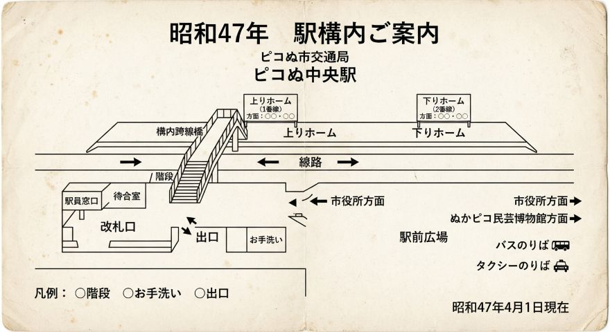

■ 駅資料について
ピコぬ市交通局では、ピコぬ中央駅、連結橋駅、記録町駅の各駅に関する 記録や資料を収集・整理し、保存しています。
現在の駅案内だけでなく、過去に使用されていた案内や駅周辺に関する記録なども、 交通局の歩みを知るための資料として保存しています。
■ ピコぬ中央駅
ピコぬ中央駅は、市の玄関口にあたる駅です。 昭和38年の交通局開業時から設置されており、現在も市内交通の中心駅として利用されています。
駅周辺には市役所やぬかピコ民芸博物館などの施設があり、 市外から訪れる方の利用も多い駅です。
交通資料室では、開業当時の駅案内や駅周辺に関する記録などを保存しています。
■ 連結橋駅
連結橋駅は、ぬかピコ川および連結橋方面の最寄り駅です。 観光の中心駅として位置づけられており、遊歩道などへのアクセスにも利用されています。
駅名の由来となった連結橋についても、交通局の資料の中に関連する記録が残されています。
過去の駅周辺案内や観光案内などについても、確認できた資料から順次整理しています。
■ 記録町駅
記録町駅は、記録町商店街方面の最寄り駅です。 市立図書館やキロクぬかクリニックなどの施設へも徒歩で移動できます。
駅周辺には商店や公共施設が集まっており、市民の日常的な利用が多い駅となっています。
交通資料室では、駅周辺の案内や過去の施設案内などを資料として保存しています。
■ 駅構内や駅周辺の案内

昭和47年頃に使用されていたとされる、ピコぬ中央駅の駅構内案内です。 改札口、待合室、ホーム、駅前広場など、当時の駅の構成を確認することができます。
現在の駅構内とは異なる部分がありますが、当時の駅の様子を知る資料として保存されています。
■ 保存している資料
各駅について、以下のような資料を収集・整理しています。
- 駅構内や駅周辺の案内
- 過去に使用された駅名標・案内表示に関する記録
- 駅周辺施設に関する資料
- 過去の利用案内
- 駅員による業務上の記録
■ 資料の閲覧について
公開可能な資料については、整理が完了したものから順次ホームページ上で公開します。
資料の保存状況や内容によっては、公開していないものもあります。 また、過去の資料には現在の駅の状況とは異なる内容が記載されている場合があります。
駅は列車が停車する場所であると同時に、 市内の人や施設の記録が集まる場所でもあります。 交通資料室では、駅そのものだけでなく、駅を取り巻く市内の変化についても記録しています。